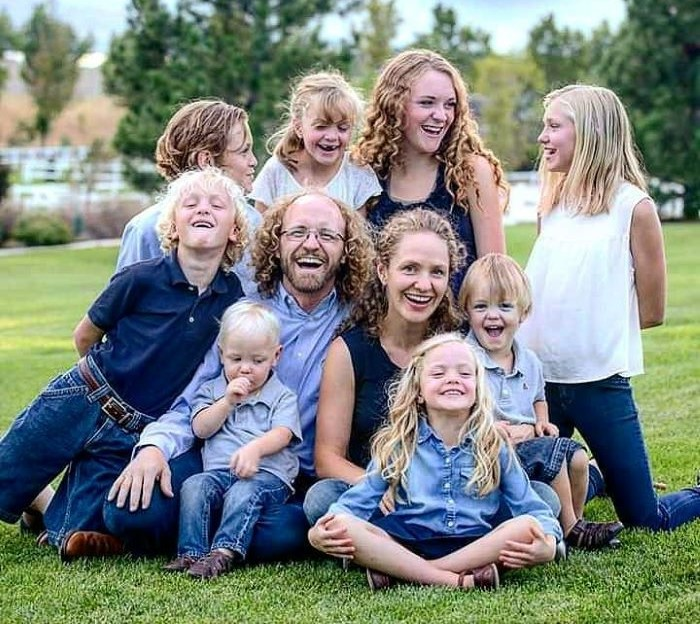

Hi, I'm Katharine Ponczoch.
I love to travel, hike, and create.
I graduated in the top 1% both in High School and at BYU.
I'm an avid reader and learner, while raising 8 children.
Now that my youngest is in kindergarten, I'm back to school once more
preparing for a career in tech.
